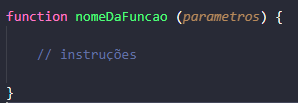
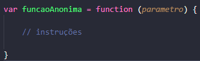

Linguagem de programação que permite criar funções complexas para web. Linguagem mais utilizada na web.
No JavaScript instruções são chamada de declarações. Após finalizar uma declaração utiliza-se (;) no final para mostrar que foi finalizada.
Para adicionar comentários no JavaScprit tem duas maneiras:
(//) = Comenta apenas uma linha.
(/*...*/) = Comenta globalmente.
(var) - Possui escopo global e pode ser alterada.
(let)- Possui escopo de bloco(Ex: Se ela for definida dentro de uma função só vai ser possível utilizar seu valor dentro da função.), pode ser alterada.
(const) - Possui escopo de bloco e seu valor não pode ser alterado.
Conjunto de instruções que executa uma tarefa.
Sintaxe de uma função:
Inicialmente implementa a palavra (function), logo em seguida o nome da função, entre parênteses os parametros(objetos, arrays, strings...), dentro das chaves é inserida as instruções.
Para "parar" uma função utilizando o (return).
Função que não recebe um nome. Observe a imagem abaixo:
No entanto o nome pode ser atribuido para se referir a si mesma, ou em um debbuger ou identificar a função em stack traces (lista de erros, indica a linha que contém o erro, o motivo, oque é necessário para corrigir).
As funções podem ser chamadas como função anônima utilizando os parâmetros. Observe a imagem abaixo:
O codigo a seguir:
Retorna [0, 1, 8, 125, 1000]